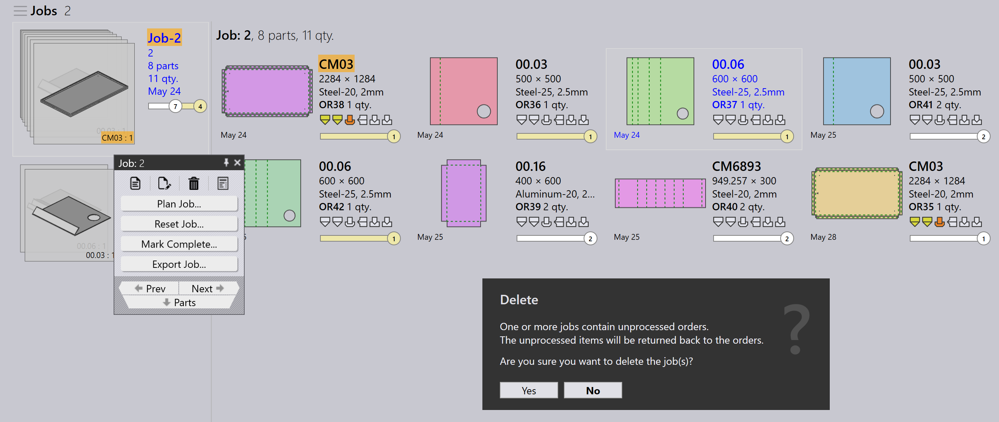

Objednávky
Objednávka definuje, ktoré diely je potrebné vyrobiť, v akom množstve a dokedy. Riadi plánovanie a realizáciu výroby v TruSmartCAM. Objednávky možno vytvoriť alebo importovať rôznymi spôsobmi a dajú sa previesť na úlohy na účely plánovania výroby.
Panel objednávok

|
|


Úprava objednávok
Vyberte jednu alebo viac objednávok a kliknite pravým tlačidlom myši, aby ste upravili bežné údaje objednávky, ako sú množstvo, termín dodania, priorita a informácie o zákazníkovi.
Ak vybrané objednávky vyžadujú rôzne hodnoty, použite možnosť Check-out for Editing, aby ste upravili každú objednávku individuálne podľa požiadaviek.


Všetky aktualizácie vykonané v objednávkach sa okamžite uplatnia v databáze. Použite príkaz Vymazať na odstránenie objednávok z knižnice objednávok.
| Príkaz Delete odstráni iba objednávky. Diely prepojené s príslušnými objednávkami sa neodstránia z knižnice dielov. |
Plánovanie objednávok
Vyberte jednu alebo viac objednávok, kliknite pravým tlačidlom myši a kliknite na Nová… → Zákazka, aby ste vybrané objednávky prekonvertovali na úlohy. Použite možnosti Zoradenie a Filter na zoskupenie relevantných objednávok pred vytvorením úlohy.

Keď sa objednávky prekonvertujú na úlohu:
-
Úloha sa presunie na stránku Jobs
-
Objednávky sa odstránia zo zoznamu Orders
-
Následne možno použiť štandardný pracovný postup plánovania úloh na plánovanie výroby a nestovanie

Ďalšie informácie o pracovnom postupe plánovania úloh nájdete v časti Auto Plan
Doplňujúce informácie
-
Ak sa odstráni úloha obsahujúca objednávky, príslušné objednávky sa automaticky presunú späť na stránku Orders Ready, pokiaľ nie je úloha alebo diel označený ako Completed.

-
Objednávky možno pridať do existujúcej úlohy alebo z nej odstrániť prostredníctvom okna Úprava zákazky na základe požiadaviek výroby.